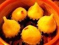
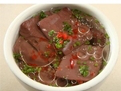
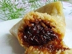
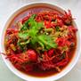
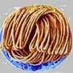
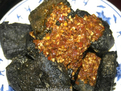
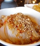
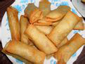
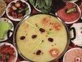

美食介绍
|  |  |  | 姊妹团子 | 龙脂猪血 | 糯米粽子 | 89886人推荐 | 85280人推荐 | 80725人推荐 |
|  |  |  | 口味虾 | 椒盐馓子 | 长沙臭豆腐 | 76730人推荐 | 76145人推荐 | 75540人推荐 |
|  |  |  | 刮凉粉 | 湘宾春卷 | 芙蓉三鲜火锅 | 876553人推荐 | 76786人推荐 | 80725人推荐 |
名厨推荐
放眼当今中国的餐饮业，从南到北，从东到西，湘菜可谓是一枝独秀，风靡全国。究其根本，乃是湘菜大师们不拘一格，既继承湘菜传统，又吸取其它菜系精华，不断开拓进取，不断推出新湘菜样式，从而造就了湘菜餐饮蓬勃发展，在遍地开花的局面。
他们就像国画之于齐白石、京剧之于梅兰芳、文学之于鲁迅一样，是中国湘菜界的一面旗帜，是中国湘菜界的标杆。他们取得的成就可圈可点，他们的梦想在实践中生产价值，他们在湘菜界的洪涛中中流击水，石荫祥、聂厚忠、许菊云、谭添三、王墨泉、曹秋泉、张力行、张志君、黄惠明，这10位优秀的湘菜大师，就是10个光辉的篇章。
正是因为有了这样一群不凡的人物领衔湘菜，才使得中国湘菜走得更远、走得更具竞争力和生存力。